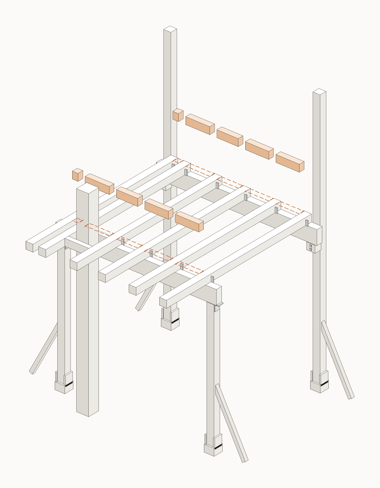

FISA 8 / 11
Blocaje intre joiste

ST stalpGR grindaJO joistaDL dusumeaPO politaC1/C2 coltarCF diagonala
Piese pentru aceasta etapa

BL~10
Blocaj (offcut)
offcut

H3~20
Heco 6x80
oblic
Scule
FierastrauBormasina
Pas cu pas
cap surub (fata vazuta)surub/piulita ascuns (pe spate)directia de insurubareoblic = la unghi (toe-screw)
Folosim suruburi + buloane, nu cuie. (Singurul cui e distantierul de 5 mm la dusumea.)
1
Taie bucati scurte de lemn (blocaje, BL) exact cat distanta dintre joiste.
2
Pune cate un blocaj intre joiste, PESTE fiecare grinda (fata si spate).
3
Prinde fiecare blocaj cu suruburi H3 oblic. Opresc joistele sa se rasuceasca — podeaua devine ferma.
zoom · cum se prinde
Gata cand
- Blocaje peste ambele grinzi
- Prinse oblic cu H3
- Podeaua e ferma